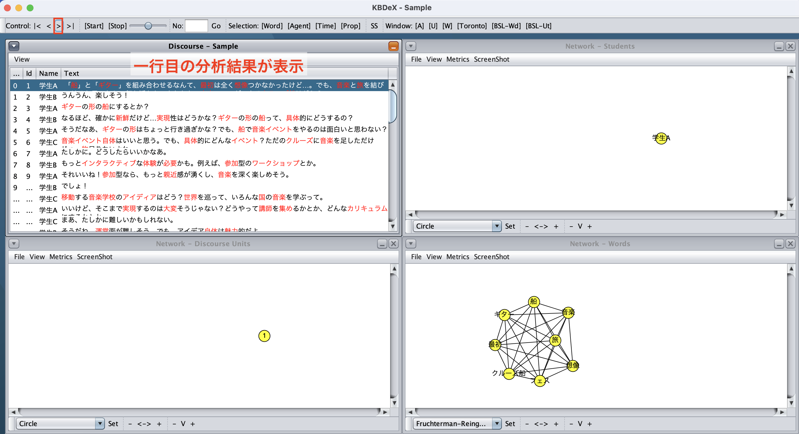
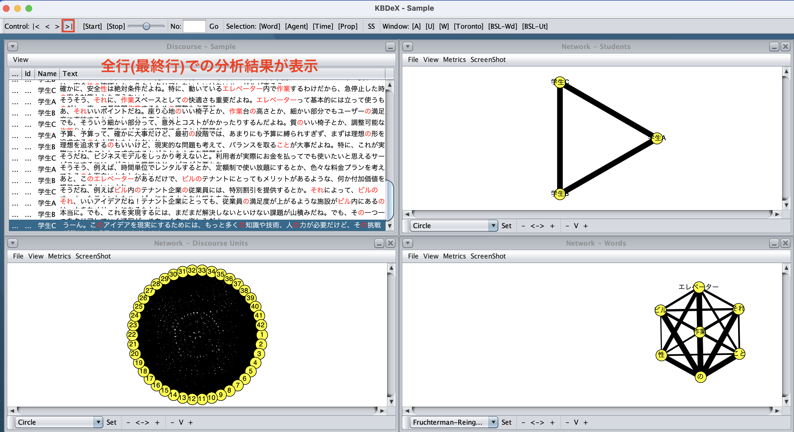
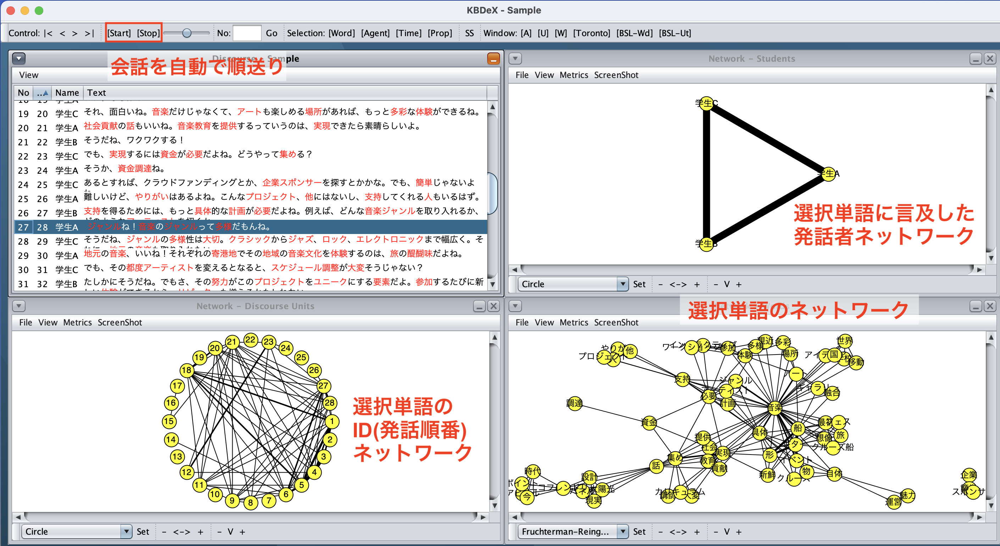
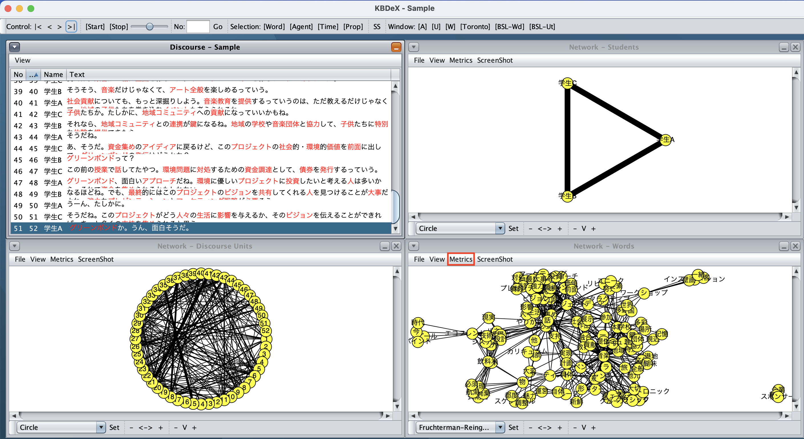
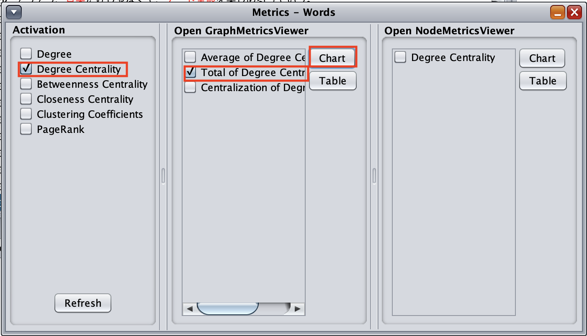
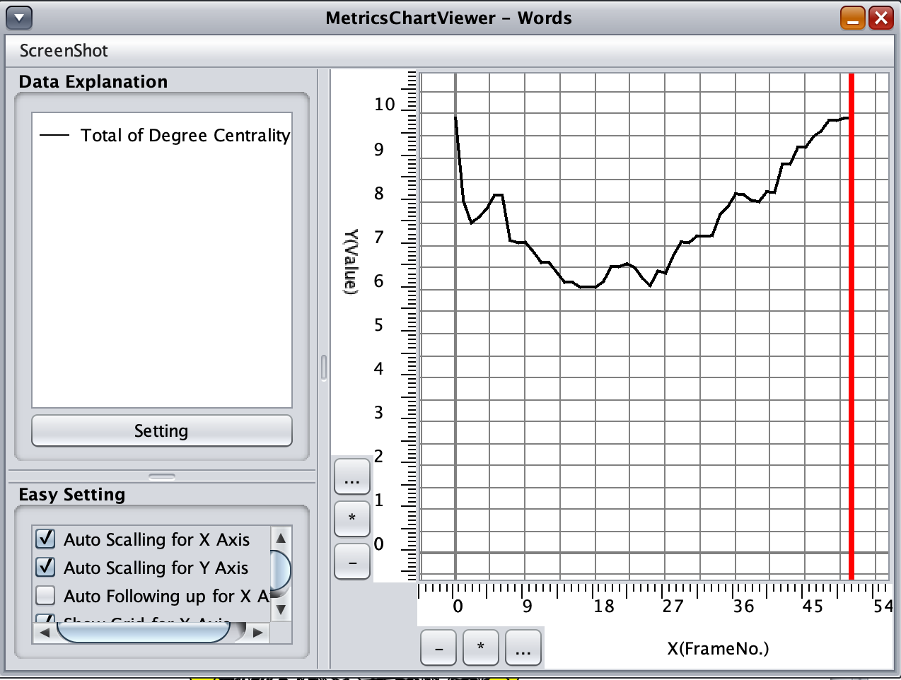
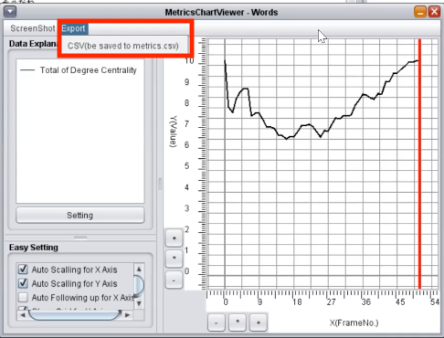
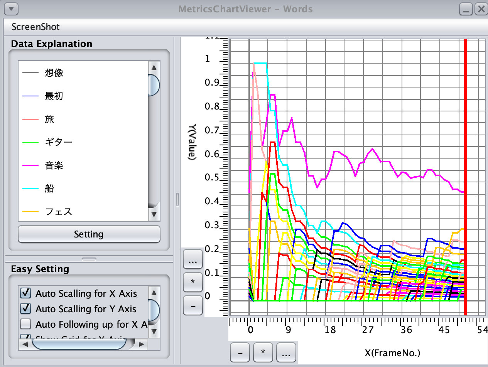
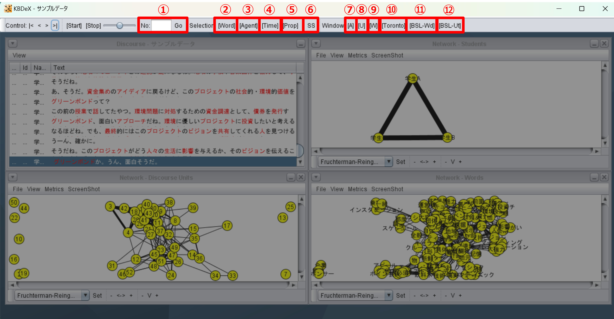

8. ネットワーク分析
8.1. ネットワークの出力
選択単語を選び，ネットワーク分析にかける準備ができたら，いよいよネットワークを出力します．左上の「Control」の「>」を押すと会話を１行（ID）分読み込みます（図8-1）．
{kind=link}
図8.1. ネットワークの出力
Controlの「>|」を押すと全てのID（発話順番）を読み込みます（図8-2）．
{kind=link}
図8.2. 全行での分析結果
Controlの右にある「Start・Stop」についてです．「Start」をクリックすると，会話を自動で順送りし，ネットワークの経時的な変化を可視化します．
画面の見方について説明します（図8-3）．
{kind=link}
図8.3. 会話を順送り中（図は27行目）の画面
- ID（発話順番）のネットワーク（画面左下）では，選択単語が出現したID（発話順番）同士にリンクが追加されます．このようなネットワークを共起ネットワーク（co-occurrence network）といいます．
- Author（発話者）のネットワーク（右上）では，選択単語に言及した発話者同士にリンクが追加されます．
- 選択単語のネットワーク（右下）では，発話に登場した選択単語がノードとして追加され，共起関係がリンクとして追加されます．
8.2. ネットワーク指標
ここでは，8.3以降で登場するネットワーク指標について簡単に説明します．より詳細に知りたい方は，書籍やインターネットに様々な情報がありますので，ご活用ください．
- 次数中心性（degree centrality）：ネットワークにおけるあるノードが持つ直接の接続数（リンクの数）を指します．この値が高いノードは、ネットワーク内で中心的な役割を果たしていると言えます．
- 媒介中心性（betweenness centrality）：ネットワーク内の全ての最短経路のうち、特定のノードがどれだけ経由地点として機能しているかを示します．この指標が高いノードは、情報の流れにおいて重要な位置を占めています．
- 近接中心性（closeness centrality）：ネットワーク内の他の全ノードまでの平均的な最短距離がどれだけ短いかを測る指標です．値が高いノードほど、ネットワーク内の他のノードにとってアクセスしやすい、つまり中心に位置しています．
8.3. ネットワーク指標の出力
ここでは，ネットワークにおける次数中心性係数の総和，および，単語ごとの次数中心性係数の変化を出力する方法を紹介します．
次数中心性係数の総和を見たい場合は，まず，右下「Words」の枠の左上のタブ「Metrics」をクリックします（図8-4）．
{kind=link}
図8.4. Metricsを選択（画面右下）
左枠（Activation）：中心性の種類一覧の選択ボックス，Degree Centralityをクリックします．
中枠（Open Graph Metrics Viewer）：次数中心性係数の総和（Total）や平均（Average）を見たい場合にクリックします．今回は総和（Total of Degree Centrality）をクリックします（図8-5）．
{kind=link}
図8.5. 次数中心性係数の総和を見たい場合の設定
チェックを入れた後，同枠の「Chart」ボタンをクリックします（図8-6）．
{kind=link}
図8.6. 次数中心性係数の総和の結果
次数中心性係数の変化をざっくりと見ることができます．次数中心性の総和を選んだ場合．各段階でのグループにおける次数中心性の合計値を計算してくれます．結果をcsv形式に保存する場合は，出てきたグラフの画面の左上「Export」ボタンを押して「CSV」を選択します（図8-7）
{kind=link}
図8.7. 次数中心性係数の総和の結果
※KBDeXのバージョンによってCSVボタンが存在しない場合があります．
単語ごとの次数中心性係数を見たい場合は，まず，右下「Words」の枠の左上のタブ「Metrics」をクリックします（図8-8）．

図8.8. 単語ごとの次数中心性係数の変化を見たい場合の設定
右下「Words」の枠の左上のタブ「Metrics」をクリックし，左枠（Activation）の「Degree centrality」をクリックします．右枠（Open Node Metrics Viewer）の「Degree centrality」を選択し，同枠の「Chart」ボタンをクリックします．
単語ごとの次数中心性の変化を見ることができます（図8-9）同じタイミングでチャートが上がっているものは共起関係が大きく，同じ文脈で話されていることを意味します．発話内容をより深く掘り下げて分析する際にはこの手法が適切な場合があります．
{kind=link}
図8.9. 単語ごとの次数中心性係数の変化
8.4. その他のボタン
ここではKBDeXに搭載されている機能の中でこれまでに説明していなかったものを簡単に説明します（図8-10）．
{kind=link}
図8.10. KBDeXに実装されているその他の機能
- No□Go：数字を入力すると任意の発話順までのネットワークを生成できます．
- Word：分析対象の単語の設定ができます．
- Agent：分析対象のAuthorの除外・追加設定ができます．
- Time：対話データのCSVファイルに「Time」列を作り，UNIXTIME（13桁）を入れておくと，発話順番を時系列で表示することができます．
- Prop：言語（日本語），分析対象（基本NOTE），Lifetimeを設定できます．Lifetimeは，一定間隔新しい共起が発生しなかった場合その単語をネットワークから除外する（共起関係を外す）機能です．詳しくは11.1. 時変ネットワーク分析で解説されています．
- SS：KBDeXウィンドウ全体のスクリーンショットが撮れます．
- [A]：Agentの枠（右上）を拡大したウィンドウを生成できます．
- [U]：Unitsの枠（左下）を拡大したウィンドウを生成できます．
- [W]：Wordsの枠（右下）を拡大したウィンドウを生成できます．
- [Tronto]：ウィンドウを拡大や縮小，移動した後に押すとデフォルトのウィンドウ表示に戻すことができます．
- [BSL-Wd]：全単語の次数中心性係数の総和及び単語ごとの次数中心性係数の推移を表示します．
- [BSL-Ut]：全対話ターンの次数中心性係数の総和及びターンごとの次数中心性係数の推移を表示します．